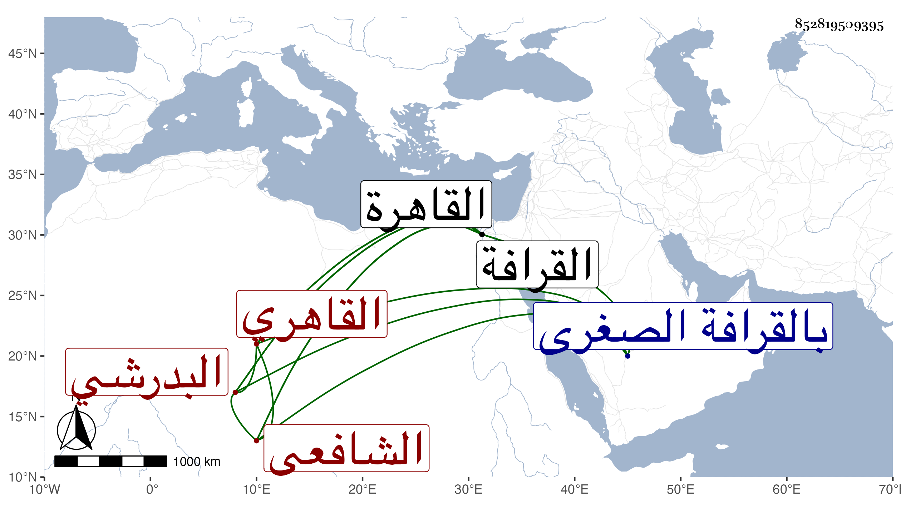

0902Sakhawi.DawLamic.ITO20230111-ara1.EIS1600.852819509395
Biography ID: 852819509395
548
محمد بن علي بن محمد بن محمد بن علي بن عثمان الشمس البدرشي ثم القاهري الشافعي نزيل تربة الجبرتي بالقرافة الصغرى ويعرف بالبدرشي . ولد سنة ثمان وثمانين وسبعمائة تقريبا بالقاهرة ونشأ بها وحفظ القرآن وعدة مختصرات عرض بعضها على الزين العراقي ، وتفقه بابن قبيلة البكري نزيل المنصورية والبيجوري وأخذ العربية عن الشمس السيوطي والأصول عن العلاء البخاري والنظام الصيرامي وعنه أخذ المعاني والبيان ولازم العز بن جماعة في علومه مدة ، ودأب حتى برع واشتغل ودرس وأفاد وولي تدريس الفقه بجامع اقسنقر وبوقف خشقدم في جامع الأزهر ثم ولي مشيخة التصوف والتدريس بتربة الشيخ عبد الله الجبرتي بالقرافة وتنازع هو وابن عمار بسببها . وكان خيرا عالما صالحا انتفع به الطلبة واختص بجانبك الصوفي فلما فر من السجن امتحن هذا بحيث اختفى نحو عشر سنين ثم ظهر فأمسكه بغتة ثم فرج الله عنه . ومات في شوال سنة ست وأربعين رحمه الله وإيانا .
